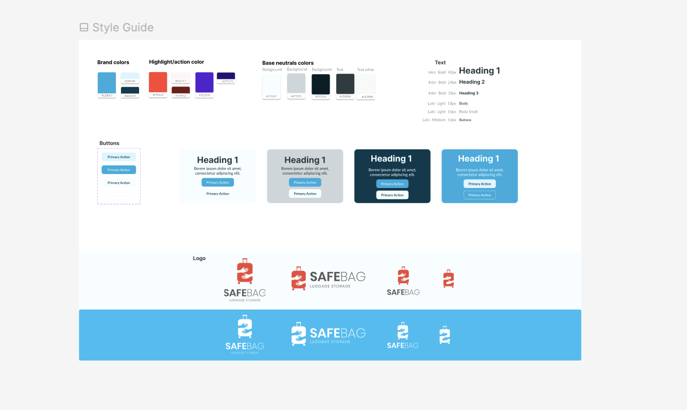

Reducing booking friction for on-the-go luggage storage
SafeBag lets travelers reserve a locker, unlock it with their phone, and explore the city without their bags. There is no counter and no staff on site, so the app is the whole service. I designed it end to end, then came back and redesigned it.
Role
Solo designer, end to end
Service
Self-service smart lockers, no staff on site
Scope
Search to pickup, 9 screens plus edge states
Tools
Figma, prototyping, logo art direction
Version 2. Reserve, unlock, explore, pick up. Designed for someone standing on a street with a suitcase.
The problem
Travelers want to drop their bags and see the city. With a self-service locker, there is nobody to ask. The user is somewhere unfamiliar, short on time, and about to leave their belongings in a machine. Every question a staff member would normally answer, like which locker, is it really locked, what if I'm late, has to be answered on the screen.
With no one at the counter, the app has to do the reassuring.
Where version 1 fell short
I designed the first version solo: user flows, visual direction, the UI system and the logo. Looking at it again, I found problems I would flag in anyone else's work.
A login wall right before payment.The worst place to ask someone to create an account.
Pricing that didn't add up.Three different rates across screens, and checkout math that didn't match the total.
Dates entered twice.Check-in and check-out were blank again at checkout.
The flow stopped at login.It never reached the locker, the unlock, or pickup, the moments that matter most.
Checkout, before and after.
The redesign
Version 2 covers the full journey, from search to the moment the locker is released, including what happens when things don't go to plan.
The full flow, 01 to 09. Scroll sideways on mobile.
Key decisions
01
Ask for bags, not locker sizes
Nobody knows if their suitcase fits a "Medium." Users enter how many bags they have, and the app recommends the size. They confirm a choice instead of guessing one.
02
Show the locker, not just a code
The confirmation shows which locker is yours and where it sits in the bank: B14, middle row, fourth from the left. You walk up knowing where to look.
03
Plan for the phone failing
If the phone dies or Bluetooth drops, the bags can't be stuck inside. A backup PIN goes to the user's number at checkout and works on the locker keypad.
04
Make running late free
One price per locker, per day. Keeping the locker until midnight costs nothing, so the reminder before pickup is reassurance, not a warning.
The moment at the locker
Unlocking a machine with your belongings inside is the point of highest anxiety, so I designed it as a short, visible sequence: arrived, unlocked, bags in, door closed. The door locks on its own and the timer starts. After that, one glance tells you when to come back.
The system
Version 2 builds on the original style guide: the same brand colors, type and logo. I added reusable components for buttons and the status bar, and changed button text on cyan from white to dark navy, because white failed contrast standards.

The original style guide that version 2 extends.
What I'd do next
The redesign hasn't been tested with users yet. The next step is to watch travelers use it at a real locker bank, and to track booking completion, the time from arrival to a locked door, and how often the backup PIN gets used. That last number says whether the unlock flow works.